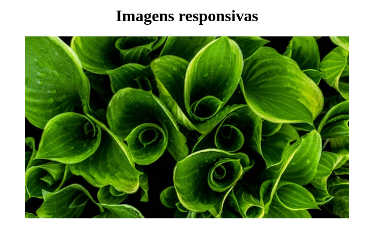
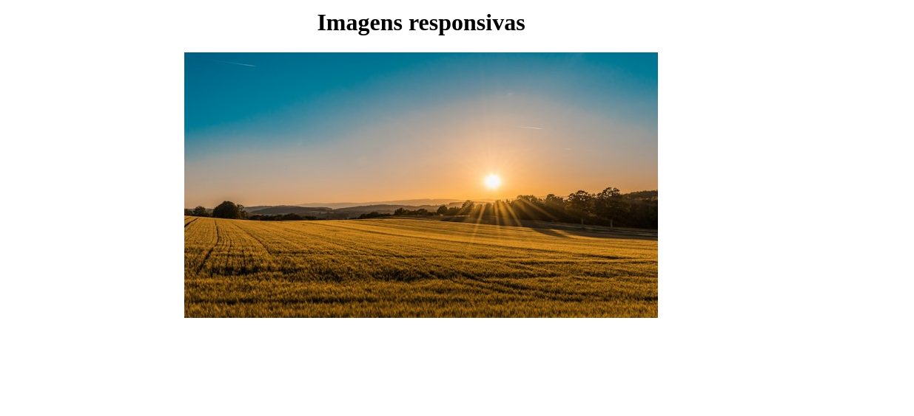

Responsividade com CSS
Imagens responsivas
A propriedade picture permite definir qual imagem dentro de um grupo de imagens será exibida em tela, dependendo de algum fator, como por exemplo o tamanho da tela. Dentro da tag picture é possível utilizar várias tags source definindo a imagem que deverá ser exibida e a condição em que ela deve ser exibida. No final pode ser utilizada uma tag img comum para definir uma imagem padrão.
Exemplo:
<!DOCTYPE html>
<html lang="pt-BR">
<head>
<meta charset="UTF-8">
<meta name="viewport" content="width=device-width, initial-scale=1.0">
<title>Imagens responsivas</title>
<link rel="stylesheet" href="styles.css">
</head>
<body>
<h1>Imagens responsivas</h1>
<div class="images">
<picture>
<source media="(min-width: 850px)" srcset="images/img1.jpg">
<source media="(min-width: 650px)" srcset="images/img2.jpg">
<img src="images/img3.png" alt="Imagem de natureza">
</picture>
</div>
</body>
</html>
Resultados:
Resolução com tamanho inferior a 650px:
Resolução com tamanho igual ou superior a 650px e menor que 850px: 
Resolução igual ou maior que 850px: 
Propriedade object-fit
A propriedade object-fit permite ajustar uma imagem de acordo com o tamanho disponível para ela. Seus principais valores são:
- fill (padrão): Ocupa todo o espaço disponível, mesmo que a imagem acabe ficando desproporcional e distorcida;
- contain: Irá dimensionar a imagem de acordo com a largura disponível, porém mantendo a altura proporcional para que a imagem não fique distorcida;
- cover: Irá cortar parte da imagem para ocupar todo o espaço disponível, mas para que a imagem não fique distorcida
Media queries
A propriedade @media permite adicionar estilos quando uma determinada condição é atingida, geralmente relacionada ao tamanho da tela. Isso a torna uma propriedade muito útil para tornar páginas responsividade.
max-width e min-width
Exemplo:
h1 {
text-align: center;
}
@media screen and (max-width: 600px) {
h1 {
color: white;
}
body {
background-color: black;
}
}
Nesse exemplo, as alterações de cores no h1 e no body são aplicadas somente quando o tamanho da tela for igual ou inferior a 600px.
only print
Quando é adicionada a condição only print, os estilos só são aplicados na impressão da página.
Exemplo:
h1 {
text-align: center;
}
@media only print {
body {
background-color: black;
}
}
Nesse exemplo, o fundo fica na cor preta apenas na impressão da página.
orientation
Aplica os estilos de acordo com determinada orientação, landscape (paisagem) ou portrait (retrato).
Exemplo:
h1 {
text-align: center;
}
.container {
display: flex;
}
.box {
height: 100px;
width: 100px;
border: 2px solid black;
}
@media (orientation: landscape) { /* Aplica quando a orientação for paisagem */
.container {
flex-direction: row;
}
}
@media (orientation: portrait) { /* Aplica quando a orientação for retrato */
.container {
flex-direction: column;
}
}
aspect-ratio
Aplica os estilos de acordo com a proporção da tela.
Sintaxe: @media (aspect-ratio: altura/largura)
Exemplo:
h1 {
text-align: center;
}
@media (aspect-ratio: 16/9) {
body {
background-color: blueviolet;
}
}
@media (aspect-ratio: 1/1) {
body {
background-color: cyan;
}
}
@media (aspect-ratio: 1/2) {
body {
background-color: pink;
}
}
Variáveis
Assim como em uma linguagem de programação, no CSS também é possível criar variáveis. Para se declarar uma variável no CSS, usa-se os caracteres -- antes do nome da variável, exemplo --bg-color.
A variável criada poderá ser acessada dentro do bloco onde ela foi declarada e também nos blocos correspondentes a elementos "filhos" do bloco do elemento onde a variável foi criada. Por conta disso, é bem comum declarar variáveis dentro do bloco :root {} para que sejam acessíveis em qualquer outro bloco.
Para acessar o conteúdo de uma variável, é utilizada a função var() passando como parâmetro o nome da variável, por exemplo: var(--bg-color).
É possível passar qualquer conteúdo para variáveis, como cores, fontes, tamanhos, entre outros valores.
Exemplo:
:root {
--bg-color: #000;
--bg-secondary: #444;
--font-color: rgb(72, 72, 201);
--font-secondary: #fff;
}
h1 {
text-align: center;
color: var(--font-secondary);
}
body {
background-color: var(--bg-color);
color: var(--font-color);
font-family: 'Courier New', Courier, monospace;
}
É possível passar mais de um parâmetro para a função var() para o caso de o primeiro parâmetro passado não seja uma variável existente, nesse caso a função irá aplicar o valor da próxima variável passada como parâmetro.
Exemplo:
:root {
--bg-color: #000;
--bg-secondary: #444;
--font-color: rgb(72, 72, 201);
--font-secondary: #fff;
}
h2 {
text-align: center;
color: var(--variavel-inexistente, #fff);
}
Uso de variáveis em media queries
Uma ótima utilidade para as variáveis são na criação de medias queries, por exemplo: em determinadas resoluções de telas, o valor de uma variável que armazena o tamanho de uma fonte poderá ser alterado e assim irá afetar todos os locais onde essa variável é utilizada de uma só vez.
Exemplo:
:root {
--bg-color: rgb(16, 16, 80);
--font-color: #fff;
--font-size: 18px;
--font-title: 50px;
}
h1.title {
text-align: center;
font-size: var(--font-title);
color: var(--font-color);
}
body {
background-color: var(--bg-color);
color: var(--font-color);
font-family: 'Courier New', Courier, monospace;
font-size: var(--font-size);
}
/* Modifica o valor das variáveis caso a resolução seja menor que 600px */
@media screen and (max-width: 600px) {
:root {
--font-title: 25px;
--font-size: 12px;
}
}
Estratégia para deixar altura relativa à largura
Uma forma para se deixar um elemento, como imagem ou vídeo, com altura sempre relativa à largura é que esse elemento seja formado por 3 tags aninhadas. Abaixo foi utilizado um iframe de vídeo como exemplo:
<div class="video">
<div class="video-area">
<iframe
src="https://www.youtube.com/embed/wy_fSStEg"
frameborder="0"
allowfullscreen
>
</iframe>
</div>
</div>
Na estilização do elemento, na primeira div deve ser informada à largura que o vídeo ou elemento em questão deve possuir.
Exemplo:
.video {
width: 60%;
}
.video-area {
position: relative;
height: 0;
padding: 0 0 56.25%;
}
.video-area iframe {
position: absolute;
top: 0;
bottom: 0;
left: 0;
width: 100%;
height: 100%;
border: 0px;
}
Min-max
A função max compara dois valores e aplica o maior valor, já a função min faz o inverso. São funções bem úteis para realizar uma comparação entre duas medidas relativas, ou uma medida fixa com uma medida relativa.
Exemplo:
.image {
width: max(60%, 500px);
}
.image-area {
position: relative;
height: 0;
padding: 0 0 56.25%;
}
.image-area img {
position: absolute;
top: 0;
bottom: 0;
left: 0;
width: 100%;
height: 100%;
border: 0px;
}
Calc
A função calc() permite realizar cálculos entre medidas relativas e medidas fixas.
Exemplo:
.image {
width: calc(60% - 100px);
}
.image-area {
position: relative;
height: 0;
padding: 0 0 56.25%;
}
.image-area img {
position: absolute;
top: 0;
bottom: 0;
left: 0;
width: 100%;
height: 100%;
border: 0px;
}